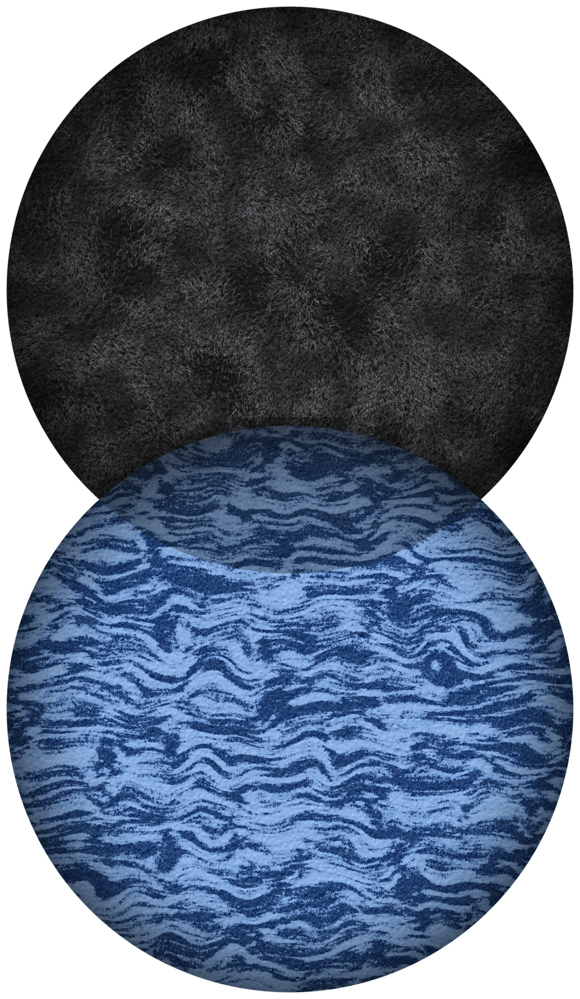

Inspired by the Chef’s journeys and discoveries, each creation captures a world of flavors, memories, and inspirations.
An invitation to wander beyond the familiar and experience gastronomy through the Chef’s eyes.
Nestled at 22B Phung Khac Khoan Street, in the heart of Saigon, The House of Fashion occupies a residence steeped in the charm of one of the city’s historic diplomatic quarters.
Originally conceived as a French-inspired villa, the building embodies the architectural elegance and timeless romance of old Saigon. Through the passage of time, it has witnessed the evolution of its surrounding neighbourhood, quietly preserving the spirit and heritage of a bygone era within its walls.
In December 2022, the villa embarked on a new chapter under the vision of Vietnamese entrepreneur Le Thu. Inspired by her profound passion for fashion and gastronomy, she reimagined this historic residence as The House of Fashion — a distinctive destination where the fashion house Mr Crazy & Lady Sexy and the fine-dining restaurant Fashionista Café come together. Today, The House of Fashion stands as a celebration of two creative worlds — fashion and gastronomy — where the enduring legacy of French architecture meets contemporary sophistication.
An exquisite space where the timeless elegance of old Saigon is brought to life through fashion, art and gastronomy.